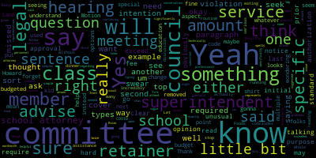
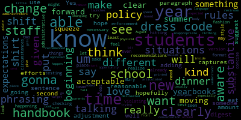
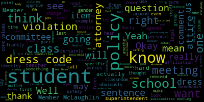
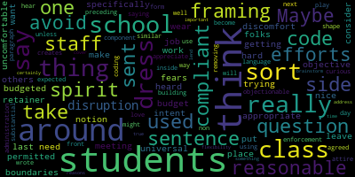
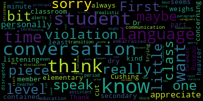

[McLaughlin]: incredibly busy.
[Edouard-Vincent]: I hope you're gonna make time to eat dinner or get have someone get you some dinner. If if hopefully I'll be able to squeeze it in if if we're I'm gonna try.
[McLaughlin]: Well, I'm actually running out and I can stop at Whole Foods and get you something on the way if you want. Let me know. I'm serious. No need to go without eating dinner. That's not healthy.
[Ruseau]: Well, it's 5.03. Hello. It's 5.03. I guess we should just get started because I know some of us have to be somewhere right after this meeting. So where's my agenda? Oops, too many windows. All right. Hello, everyone. Welcome to the Rules and Policy Subcommittee meeting of April 27th. I'm going to start with our attendance. Oh, I should just read the notice. Please be advised that on Wednesday, April 27, 2022, from 5 p.m. to 6 p.m., there will be a rules and policy subcommittee meeting held through remote participation via Zoom. The meeting can be viewed through Medford Community Media on Comcast Channel 22 and Verizon Channel 43 at 5 p.m. Since the meeting will be held remotely, participants can log or call in by using the following link or call-in number. The Zoom link is https://nps02155-org.zoom.us slash j slash 99085403902. Meeting ID, if you want to call in, is 99085. excuse me, 990-8540-3902. The phone number to call is 1-929-205-6099. Additionally, comments or questions can be submitted during the meeting by emailing me at pruseau, excuse me, at medford.k12.ma.us. I almost did not spell my name. Those submitting questions or comments must include the following information, your first and last name, your Medford Street address, and your question or comment. I'm gonna do this roll call. Member Graham.
[Unidentified]: Here.
[Ruseau]: Member McLaughlin.
[McLaughlin]: Yes, here.
[Ruseau]: And member Rousseau here, three present, none absent. All right, so we're going to, we have two items on our agenda. This is a continuation, not a technically a continuation, but as a subsequent meeting to the same exact agenda. The first item on our agenda is to discuss the school attorney policy. I'm gonna share my screen once I minimize and move things around. All right, let's see. All right, I have a gigantic screen. Is everybody able to see this without it being too small? Look okay? Good, great. So on the school attorney policy that we discussed at the last meeting, we had one question regarding the last sentence. This last sentence being, this does not preclude individual member contact with legal counsel related to ongoing legal questions or matters before the school committee, before the committee. I did email our attorney, Attorney Granzband, and ask him about that question, about that sentence and his thoughts. I have his response right here. He said, things have been working fine. I like the wording that requires school committee action to seek legal advice, et cetera. So it's clear that the committee makes the decision. I have no objection if an individual seeks an update on a matter that has been referred to the entire committee. Everyone has been respectful of the process. And he said, thank you for asking. So unless there are any members that want to further discuss the policy or the sentence, it sounds like he's fine with it. We can always change it later if it turns out.
[McLaughlin]: Can I ask?
[Ruseau]: Sorry.
[McLaughlin]: I do have some questions. I think I was not in this last meeting. I think that was, yeah, I think I had COVID.
[Ruseau]: You did, correct.
[McLaughlin]: Yes. So, um, I just had a question I'm sort of reading it over and had a question. What I'm because I missed the discussion many types of legal assistance or routine and do not require specific committee approval or prior notice however when the superintendent concludes that unusual types of amount or amounts of professional legal service may be required required they will advise the committee and seek either initial or continuing authorization for such service. Can you distill that for me? I'm not quite sure what you're saying there.
[Ruseau]: Sure. So, essentially, I read that as we have a retainer at Mr. Green's ban is paid the retainer, but if we're going to engage him in a process where we're going to start getting another $100,000 right here and there, that we need to approve that. It's not that we wouldn't approve it, but we just don't want to be like, as a secretary, I don't want to be showing up and seeing a bill for a quarter of a million dollars to an attorney, and we never approved it for our regular legal activities. So that's what that's meant to be.
[McLaughlin]: Yeah. Can we, do you think, I don't know, is there a way to wordsmith that just a little bit more because that was really a hard read for me. I was like, I don't, and I can see it. It's not that it was more that it was a really hard read for me. And I didn't know what you were talking about. I see that. I knew that you had a purpose, but I couldn't see what exactly the purpose was if you follow me. So, um,
[Ruseau]: Yeah, it's hard when we don't have specific sets.
[McLaughlin]: Yeah, so if we could just say something like, you know, something as simple as you said, you know, there's a standard retainer fee for legal services. You know, if that retainer, if it's, you know, if there's an unusual amount of services needed that will, you know, exceed that standard fee, then, you know, if then something. So that sort of spells it out a little bit more because it's not clear what is being said there. In my opinion, and I would you know obviously ask other members what they what their opinions are but I didn't really understand that.
[Ruseau]: yeah i'm trying to figure out how to say it because I don't actually know the details about. I know that we have it in our budget.
[McLaughlin]: I don't think we need to know the details, just that we have one, that we have a retainer that is a budgeted amount. And if it looks as though that retainer is going to be significantly exceeded, the superintendent will advise the committee and seek authorization for that excess. Do you want me to put that in the chat?
[Ruseau]: No, I'm starting to type it. Unfortunately, since I'm sharing, it seems that Google. It goes slow, yeah. That Safari, I should have been in Google Chrome, but.
[McLaughlin]: Yeah, that would be helpful. And then while you're typing that, if you don't mind, if I could ask another question, since I wasn't here and maybe some other folks could help answer, is that okay, Member Rizzo? Sure. Um, what was the conversation around this regarding. So Howard is one aspect of our legal services, but as folks know I'm sure there's another aspect through to me and Lane Lane and I forget the third name, which is the special education representation.
[Ruseau]: Yeah, this policy is just about the school attorney, the standard when we retain, it isn't about those other legal services, which I do think, I don't know if we have a policy on that and it's definitely worth looking into.
[McLaughlin]: Okay.
[Ruseau]: But I agree that that I completely unaware of whether we even have a policy on those that matters. Okay, does that sentence look okay? because I got distracted by the typing.
[McLaughlin]: It does not require specific committee approval of prior notice. However, when the superintendent, the usual types or amounts of personnel may be required that exceed the budget of retainer, they will advise the committee and seek either initial... Yeah, that's fine. Yeah, that helps me understand a little bit more.
[Graham]: I think you just need to take retainer out of the sentence for budget. No, leave that one. Take on the other side of budgeted.
[McLaughlin]: In front of budgeted, you have it twice.
[Unidentified]: Thank you.
[Ruseau]: Okay. And then they should be the superintendent.
[McLaughlin]: Yeah, and then. So, given what you just said member or so about this separate issue that this is specific to the school attorney which is a little bit vague because we technically have to school attorneys we have Howard and then we have a firm. that represents against the special education law, because it's more, I assume, because it's more complex and you need a specific license for that. But at the top and the open sentence, it says it will be the duty of the council for the committee to advise the school committee. It will be the, yeah, so the council for the committee, I would call it, instead of school attorney, I might say on the top, council for the committee, because that really specifically says it's our, essentially. It's not, because we have more than one, yeah, council for the committee. Yeah, committee, yeah, whatever. I like what you said there. Council for the committee to advise the school committee and the superintendent on the specific legal problems submitted to them. Yes. The council for the committee, I would say instead of they, because it's suggested- Where are you?
[McLaughlin]: Yep. The council for the committee will attend meetings upon request and will be, yeah, sufficiently familiar with committee policies. Yeah. Yeah, that's fine. Yeah, so either school committee attorney or counsel for the committee, I would say one or the other. But yeah, that looks good. Thank you for bearing with me. I'm sorry I missed the last meeting. That's okay.
[Ruseau]: You had a pretty good reason. Great. And I mean, the superintendent obviously uses the services as well, but really it's acting on our behalf. in all of those matters. So I don't think we need to be more detailed. And actually the word school is a little, it's not like the Missittook has a school attorney.
[Unidentified]: It's just the... So any other questions or comments? I'm not seeing everybody, sorry.
[Ruseau]: If anybody does see anybody raising hands, please let me know because while I'm sharing, it's hard to see
[Murphy]: Mr. Rizzo? Yes. Can I just ask a quick question? Of course. On the second paragraph, and I think this may have been discussed on the floor when this was initially referred, or maybe you've already talked about it today, but that sentence of the superintendent may also take such action at the direction of the committee. I don't believe that's meant to suggest that each time the superintendent or her staff are seeking guidance that they're doing it with specific committee authorization, correct? Because we have to consult with the attorneys. So I know that this is a piece of counsel that I've provided to the committee in the past, but the risk here with the language not being that precise is that a future committee could exploit the language to unfairly hold a future superintendent accountable for just doing basic day-to-day functions of their job. There's no superintendent in Massachusetts who does not consult with the person who, and the term school attorney, frankly, comes from antiquated statutory language that then worked its way into MASC policy. So it's not unusual for that to be a term that's used. But I think to the point that I heard made a few minutes ago, as the nature of school law has expanded, there are attorneys that, well, we would consider it to be an umbrella term of education law or a school district representation. There's some parts of that that typically attorneys that have practiced in that area will focus more heavily on in one direction or another. But my recommendation would be that the second sentence be reworked to make it clear that there's an understanding that the administration is seeking legal counsel based on day-to-day matters. I mean, I take the brunt of this policy and the amendments you're looking at to indicate that, because the attorney ultimately works for the school committee, if the administration, through its legal representation, is going to be taking an action that is going to have some significant impact on the district, primarily financial, that's the type of impact that would, you know, how it would normally manifest itself, that this is a policy reminding the administration to come back to seek guidance from the committee as to whether to do that or not. Is that a fair characterization of what the goal is?
[Ruseau]: It's certainly what I believe it is. Member McLaughlin?
[McLaughlin]: Yeah, thank you. And I'm wondering if it's not either or, but maybe both and, and I don't know, but I would put that out there. So what I'm hearing is that, obviously nobody would wanna limit the superintendent's authority and ability to consult with the school attorney, which I'm sure happens on multiple occasions in multiple ways. But it seems to me, What I, what I thought part of this was as well is that the school committee is informed should legal action be taken. And not just that it's exceeding the budget right so I thought it was both. So I'm sort of responding to both what Mr. Murphy was just saying and my impression of what I thought this document was as well. So I don't know if I'm being clear.
[Murphy]: No, I think, Ms. McLaughlin, I think you are. I don't take that to, I sort of see that as sort of an expansion of the point that I was making, not in any way contradictory to it. I don't think I would disagree with it, with one exception, I guess I would say one thing. So the superintendent who functions as the agent of the school committee, generally speaking, although there are exceptions to this in some of the larger districts, does not enjoy their own legal counsel. However, it is not uncommon for the school attorney to be advising the district on matters that involve implicate strict confidentiality. And that, whether it's sometimes it's through regulation, promulgated by DESE, other times it's just a well-developed practice, but it is the case that by acting as the agent of the committee, while I think that ultimately the school committee as a body could generally vote to obtain any information that the attorney has, it would require that level of action by the committee to obtain that information, which I think is the other point that I think that this policy is making, is that the attorney is functioning as the attorney to the committee, not as individual members of the committee, meaning individual members do not have access to that information, right? But it is like, there's some blurriness to that. And again, like, This is not, it's not uncommon for committees and superintendents to have tension around this issue. The sort of like most well-worn path for this is that the superintendent is the one that works with the committee, excuse me, with the council on a day-to-day basis, sometimes for years, right? But when the committee decides that they'd like to move on from the superintendent, it's the council that they call. And I'm saying this having experience as a former attorney to a school committee, like that can become an awkward moment when the person that you've worked most closely with is the person that you're now charged with disposing of. And again, it happens. It happens in communities all the time. So that sort of tension and awkwardness, I don't think we can legislate that out. And I don't think there's any reason to. Frankly, the only way to remove that tension is for the administration to have its own attorney. I don't think there's a need for that. I don't think it's not a good use of resources. But as long as the policy does not restrict the administration to communicate with and work with the attorney on a day-to-day basis, which I don't think this language does, particularly with the change that Mr. Rousseau, I think, just edited in, I don't see it as inherently problematic. Just understand that the subtext of this policy and of the relationship is one that has that natural tension that districts all across the state deal with. Thank you.
[McLaughlin]: Remember, so I just wanted to point out that you missed committee at the top on the second. I just noticed it and I didn't want to forget. So second sentence, yeah, that sentence, the council for the committee. Second sentence.
[Unidentified]: Yeah. For the, yeah.
[Ruseau]: Thank you. Yeah. I just wanted to add, you know, just to not to belabor the point, but, you know, I expect that the superintendent might speak with our attorney about personnel matters, for instance, for which I fully expect her to do, but neither the committee as a full vote or individual members can ask for any of that detail. So I think that that's a pretty interesting example for which the attorney works for us. But at the same time, there's these weird spots where we can't even really know what's going on. So, but anyways, if there are any other comments or questions, we always can amend this on the floor before hopefully approving it. And if not, is there a motion to approve? to send to the full committee. Second. I do wish I could see all of the people at the same time. You can stop sharing your screen now. Oh yeah, thank you. I'll do that. That'll help. And you can see us. Great, thank you. Okay, member Graham. Yes. Member McLaughlin?
[McLaughlin]: Yes.
[Ruseau]: And Member Ruseau? Yes. Three in the affirmative. This policy will be sent to the full committee at the, I believe May 23rd, if my dates are correct, school committee meeting. Excellent.
[Unidentified]: Next up we have, let me get my agenda up.
[Ruseau]: the dress code policy, which we discussed. We had some community feedback and input in the last meeting. We discussed, I was trying to have us not steer into the specific policy, but it was hard not to go there. And so I have drafted, and when I say I've drafted, I've stolen for the most part, as a lot of policies are. No sense to reinvent the wheel. A dress code policy that I thought we could use as a, As a place to begin, frankly, let me share that. I have sent it to member Graham, member McLaughlin, Dr. Edouard-Vincent, and the assistant superintendent for elementary as well as secondary, but they received it in a blind CC, so we could not have dialogue, but I wanted to give them a chance to read it beforehand.
[Unidentified]: So let me share that.
[Ruseau]: Okay, so as I mentioned, a lot of this has been much, most of it, frankly, has been taken from the Seattle dress code policy, which I personally really like because it is, aside from being short, it leaves relatively little up to interpretation, which is sort of the biggest challenge around dress codes and implementation. So I'm going to, I am going to read it. It's two pages with lots of spacing. So the dress code is the policy of the committee that the student and their parent, guardian, caregiver hold the primary responsibility in determining the student's personal attire, hairstyle, jewelry, and personal items, i.e., or e.g., backpacks, book bags, Schools are responsible for ensuring that student attire, hairstyle, jewelry, and personal items do not interfere with the health or safety of any student and do not contribute to a hostile or intimidating environment for any student. Core values in relation to student dress, this district's core values are as follows. By the way, obviously, I'm asserting these are our core values having actually not been told that we all agree these are our core values. Students should be able to dress and style their hair for school in a manner that expresses their individuality without fear of unnecessary discipline or body shaming. Students have the right to be treated equitably Dress code enforcement will not create disparities, reinforce or increase marginalization of any group, nor will it be more strictly enforced against students because of racial identity, ethnicity, gender identity, gender expression, gender nonconformity, sexual orientation, cultural or religious identity, household income, body size, type, or body maturity. Students and staff are responsible for managing their personal distractions, and students should not face unnecessary barriers to school attendance. So those are the core values. The dress code is students must wear a top, which is a shirt, blouse, sweater, sweatshirt, tank, et cetera, bottom, pants, shorts, shirt, dress, et cetera, and footwear. This policy permits additional student attire requirements when necessary to ensure safety in certain academic settings, such as physical activity, gym, science, or CPE courses. There are specific requirements for many of those areas. Additionally, this policy allows for reasonable variation in required student attire for participation in activities such as swimming or gymnastics. Students may not wear clothing, jewelry, or personal items that are pornographic, contain threats or that promote illegal or violent conduct such as the unlawful use of weapons, drugs, alcohol, tobacco, or drug paraphernalia, demonstrate hate group affiliation, association or affiliation, and or use hate speech targeting groups based on race, ethnicity, gender, sexual orientation, gender identity, religious affiliation, or other protected groups. Intentionally show private parts, nipples, genitals, or buttocks. Clothing must cover private parts and opaque, not able to be seen through materials. Cover the student's face to the extent that the student is not identifiable, except clothing or headgear worn for religious or medical purposes, or demonstrate gang affiliation or association. Attire worn in observance of a student's religion is not subject to this policy. Enforcement. This is probably where we'll probably want to have some real discussion around this because I frankly don't feel strongly about its principles or assistant superintendents, assistant But principles are required to ensure that all staff are aware of and understand the guidelines of this policy. Staff will use reasonable efforts to avoid dress coding students in front of other students. Students shall not be disciplined or removed from class as a consequence for wearing attire in violation of this policy, unless the attire creates a substantial disruption to the educational environment, poses a hazard to the health or safety of others, or factors into a student behavior rule violation, such as malicious harassment or the prohibition on harassment, intimidation, and bullying. No student shall be referred to as a distraction due to their appearance or attire. Typical consequences for a violation of this policy include parent, guardian, caregiver contact or conference and the directive to cover, change or remove the non-compliant attire. A student may be instructed to leave their classroom briefly to change clothes. The principal or their designee should notify a student's parent, guardian, caregiver of the school's response to violations of the student dress policy. Actually, dress code policy. So that's draft one. I imagine there are people who have feedback. So I'll open the floor for thoughts, comments.
[Unidentified]: can't be perfect. I know that. Russell. Yes. I am.
[Graham]: I did want to say that I the universal dress code specifically around things that are not permitted. I think this does a really nice job of getting at the spirit and the intent of the work that we're trying to do around the dress code and does, I think, put some really appropriate boundaries. Because I think we heard, I'll say fears from folks in the last meeting around the notion that things students wear to school could make others uncomfortable. So I think discomfort is a hard thing to sort of get to an objective place, but I do like sort of the framing that you've used to say, what do we consider to be objectionable in some way, shape or form? So I did really appreciate the framing of that. And I agreed with all that you wrote. I think on the enforcement side, the one question I had around students not being sent out of class, I think the question is, if we're saying that students can't be sent out of class, how can non-compliant students be expected to become compliant inside of the school day? So I was just curious about that component of it and how that might play out in a school building. And I'd love to hear from the administration about that as well.
[Ruseau]: I'll just jump in on what my thoughts are on that particular thing. What I understand that to mean is students can be removed from class under certain circumstances, but if I come to school and It's really hard to come up with examples because frankly the stress code is very permissive. But if I come to school and I'm violating the dress code somehow, and I am not creating a substantial disruption to the environment or creating obviously the hazard and health and safety stuff, I'm still violating it, but like the class can go on. You know, a teacher stopping the class to say, you know, your pants are too low and I can see your buttocks. Well, the student is sitting in their chair in the back row. There's an example where it's like, that can wait till the class is over rather than stopping the class and making the student a spectacle. Or frankly, if you notice it when the student's coming in, then, you know, before class starts. But because it's such a permissive policy, it is kind of hard to think about like, How do you even get to the point where you're in a classroom. And at that point you realize there's a violation, I mean, nobody's coming to school barefoot, and nobody notices till they're sitting in their first period class right i mean. somebody notices before that probably. But that's just my thoughts. But I'll let Member McLaughlin.
[McLaughlin]: But just as a point of information on the next paragraph, don't you say the typical consequences for violation? So it sounds like the options would be if they're staying in class, there could be a directive to cover or change the attire. So they could cover up potentially while they're in class. So there does seem like there are some options if they stay in the class, but that's you're not what you're what I'm hearing you say, if I'm, if it's, if I'm hearing you right member or so is your that paragraph that says they should not be removed from class was not the intention that you had. Or was it the intention that you had I'm not sure what you're saying because I, from what I'm hearing member Graham say is that she's wondering if they're not removed from the class, you know, how are they, then, addressing the, the code violation but I feel like the next paragraph addresses some of how they could address it within the class but I'm not sure that was your intention so what was your, I mean,
[Ruseau]: I think that it's hard to discuss without a specific example sometimes, you know, a violation that isn't disrupting the class, but it's still a violation that needs to be taken care of.
[McLaughlin]: I'll give you an example. Say somebody has something on their shirt that has a swear on it, right? And so, you know, it's not, the kids are used to seeing hearing, talking swears. It's not gonna, the class is not gonna go, oh, that kid has a swear on their shirt. You know what I mean? Like they're used to seeing that kind of thing, but clearly it's a violation of the code, right? So that's an example. In that instance, there could be whatever, a jacket, a sweatshirt, something in the room that, you know, they could zip up, cover up until they can change or something. I guess that's the example.
[Ruseau]: Yeah, and in that example, I think this other issue of avoidance of dress coding students in front of their peers becomes an issue. Like if the students are coming in and there's the rigmarole of class squeezing through a door and the teacher sees it and says, look, you can either, before the class is assembled and everybody's looking at the teacher, can you go to the office and get a sweatshirt or do you have something to cover that versus you know, the student is sitting in their chair and on the back of it, there's something that is like causing problems with the students that can read it from behind. Well, in that case, that's disrupting the class. And obviously that needs to be addressed then. So there's so much about that. And I did say that, you know, what I like about the policy is that it leads less to the interpretation, but I think, My experience is the judgment of a lot of our teachers and staff is quite capable of handling that situation. And I know that Ms. Lucy really wants to speak.
[Galusi]: No, you know what? Thank you, member Ruseau. I think for me, the only concerning piece I have is that if I'm, what I'm listening to this conversation seems like it kind of weighs a little bit heavier to the secondary piece, which maybe Dr. Cushing can speak to in a minute. Because if there's a violation, at least at the elementary level, You know, students, for the most part, are contained to the same classroom. So I think that it's not always as cut and dry. And then I think we'd really have to have a conversation about how's the communication. First and foremost, we don't want students to be embarrassed or have their education disrupted. But if there is a violation, trying to get them in a transition period from one class to the other, I don't know how realistic that is in terms of like, by the time the teacher maybe even alerts an assistant principal, the student might be in the next class. So I just worry a little bit about the strictness of the language there in the third paragraph.
[Unidentified]: This one or the last one there? exclusively, which of that, this is the third one, but is that the one you mean?
[Galusi]: I don't know if it's just like best efforts. I don't want to see students disciplined, but I think just the stark nature of the language doesn't really lend itself to a lot of flexibility in how the conversations can happen.
[Unidentified]: Are you talking about this paragraph right here? Can you hear me? Can anybody hear me? Yes, we can hear you.
[Ruseau]: We can hear you. Okay, thank you. I don't think Ms. Galussi can hear me. She looks frozen, actually.
[Unidentified]: She does look frozen. She's frozen.
[Ruseau]: Oh, she's moving. I don't know if she can hear me though.
[Galusi]: No, I actually could not hear you. I'm sorry. Okay.
[Ruseau]: So can you hear me now?
[Galusi]: I can't, sorry. We're sharing the same audio. We're all in the same room.
[Ruseau]: Okay. Sorry. So is it the paragraph that I've highlighted is the issue or the one at the bottom in particular?
[Galusi]: That's the one for me. It's not, I appreciate the conversation with the caregivers that I have no problem with that. I'm just curious as to like in real time and taking into account the varying levels.
[Ruseau]: So there was, in response to that, there was one sentence that I removed. Well, there's more than one sentence but there was a sentence I removed about the superintendent will promulgate. I don't remember the exact words but essentially, you know procedures around how this will be enforced. I sort of anticipate that that would happen anyways, like even with the current language. I mean, this does not get into the details of a kindergartner versus a senior versus a voc student who's half the time out on, you know, doing their internship. You know, it doesn't get into that nitty gritty that I certainly understand is different from a student who's going from one classroom to the next versus a student who's just in the same room all day. Excuse me. And I'm very open to language changes. If you have suggestions, we also do not have to finish this one tonight. If people want more time to think on it and obviously, Before it comes to the full committee, when it gets to the full committee, we can edit all we want there as well. Although it's preferred that we do it in a smaller setting.
[Galusi]: I personally would appreciate that. I know I had two meetings prior to this. So this is the first time I'm seeing the language. So I personally would prefer that, but I don't want to necessarily speak for everybody.
[Ruseau]: Perhaps.
[Graham]: The sort of spirit of the preceding sentence, the staff will use reasonable efforts to avoid dress coding students in front of other students. Maybe there's some similar language that can be used in this next paragraph around staff using reasonable efforts to avoid removing students from class. unless the attire creates a substantial disruption, just so that there is some flexibility there, because there are reasons that we could certainly brainstorm that would lend it to not being a true disruption, but also being important to address at that time. So maybe just something like that would cover it.
[Unidentified]: with the slow typing again, sorry. All right.
[Ruseau]: Yeah, I mean, I feel like this sentence really the one above it covers it, but I certainly see how there are separate paragraph and. I mean, you know, no teacher wants to turn their whole classroom into a circus over a dress code violation. That's not anything anybody's interested in. So it's sort of, it's a bit of that, like we're saying it to make sure everybody gets that. But I mean, I was a student, no teacher wants their classroom to be turned upside down over a dress code violation. student who's got something inappropriate that something in violation on their on their sweater hoodie or or whatever else so I certainly I hear you miss closely but I also. I feel like this is like the intent is the goal here at this. I'm wondering what you think about this change because I do want it to make it clear that this is not a black and white issue. And there may be students that every single day they wanna show up violating the dress code at some moment in there. you know, for whatever reason. And so it's different if that's the situation, then you may end up dress coding somebody in front of a student in front of other students, because the student is tempting or taunting the whole situation and policy. So I think we wanna make sure that there is the wiggle room to deal with that. Dr. Edward-Vinson?
[Edouard-Vincent]: Yes, I was gonna say, That adjustment to the sentence, adding that phrasing, staff will use reasonable efforts. I think that that captures it. So I like that phrasing for that second paragraph as well. And I was also going to suggest that given the amount of time to really digest these recommendations in a concise format. I would love to be able to at least let some of the administrative team see this version and just look at what is already in place, the things that are happening, and how the two Um, Mary, I, I feel like hitting the areas that there does need to be, um, enforcement is necessary in some situations and circumstances. Some students will just test it for the sake of testing. And some students may not even realize that they're violating the policy because you know, they're just checking out news, you know, new fashion or a new style. So I have seen situations where, um, shirts that might have inappropriate language. The students can be sent to the restroom, and they can put the shirt on inside out. If they don't want to like go put a, you know, a school, a different piece of clothing on, but Again, also at the beginning of the year, when students get their kind of rules, their book of rules at the beginning of the year and talking about this being a substantive shift, I think this could be something that could happen as the school year launches to really spend time talking about what our expectations are around dress code and you know, what's acceptable, what is not, you know, acceptable. And again, it's clearly articulated that we're not trying to target students based on, you know, their different physical builds and clearly, you know, to be clear about that, but at the same time, give them an opportunity to understand You know, these are the expectations moving forward. So I would love to be able to get this in front of, you know, more administrators for them to just see the shifts and staff for them to also see what some of the expected changes are. for the dress code so that we could, you know, have a little bit more of a robust conversation and everyone be clear on what the new policy is moving forward once it's, you know, approved by the full body.
[Ruseau]: Thank you. I, about, yeah, certainly going into the new year is when I was hoping we would approve this, if it gets approved, that it would begin. But I just have a quick question about procedure around the handbooks. I don't remember when the handbooks get updated. And I would like us to be sure that we don't approve all the handbooks and then, you know, two weeks later, a real part of the handbooks has to be replaced. Do you know when that happens? I mean,
[Edouard-Vincent]: I think we would be able to have the summer I want to say the handbooks are given out at the start of the school year. So, over the summer, August would have like there definitely would be time before we get them, you know, printed and. know changing the year usually it's the same handbook that you kind of update but especially for something as substantive as dress code you know being you know clearly delineated we want to make sure that this gets added to all of the yearbooks not yearbooks all of the handbooks and you know, for staff to be aware of this change, for students to be aware, for parents to be aware of the change that's being recommended.
[Ruseau]: Great, thank you. So I wanna make sure to pay attention to the time. I believe somebody has to drive somewhere right now. But is there a motion to continue this one policy to one more subcommittee meeting?
[McLaughlin]: Motion to continue this policy to another subcommittee meeting.
[Ruseau]: Any other comments? Oh, great. So we'll have one more meeting sometime in May. Hopefully, if we can send this up to the first meeting in June for approval, whatever it looks like then. Member Graham?
[McLaughlin]: Yes.
[Ruseau]: Member McLaughlin?
[McLaughlin]: Yes.
[Ruseau]: Member Ruseau, yes. Three in the affirmative. This will be continued until the next, we'll have another subcommittee meeting on this topic. We may actually add another item I think that's a really good point. And I think that's another agenda item to that as well. Um and, um. No other comments. Is there a motion to adjourn?
[McLaughlin]: Motion to adjourn.
[Unidentified]: Second. Member Graham.
[Ruseau]: Yes. Member McLaughlin.
[McLaughlin]: Yes Member.
[Ruseau]: So yes, three in the affirmative. Thank you,
|
total time: 7.34 minutes total words: 1303  |
total time: 4.08 minutes total words: 560  |
total time: 21.84 minutes total words: 3112  |
total time: 2.97 minutes total words: 347  |
|
total time: 1.98 minutes total words: 326  |
|||
{kind=link}
{kind=link}
{kind=link}
{kind=link}
{kind=link}